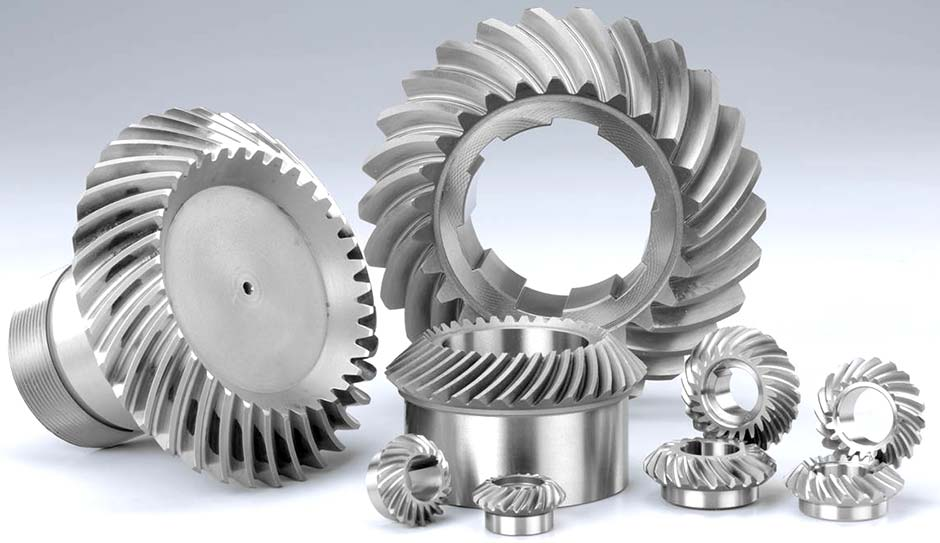
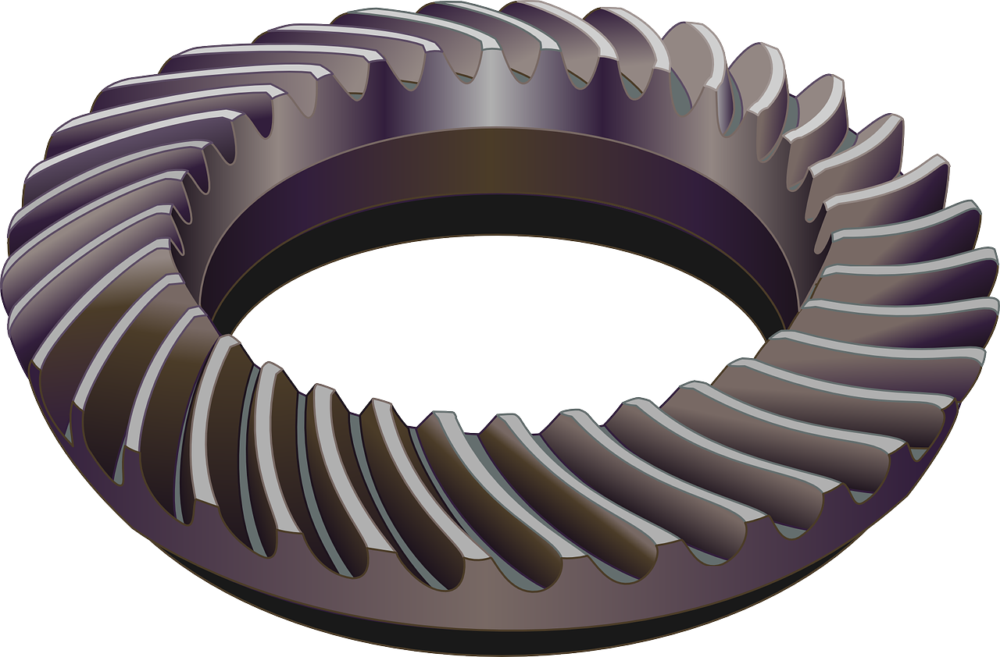
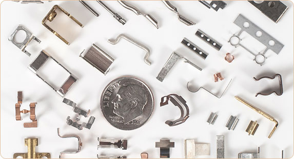
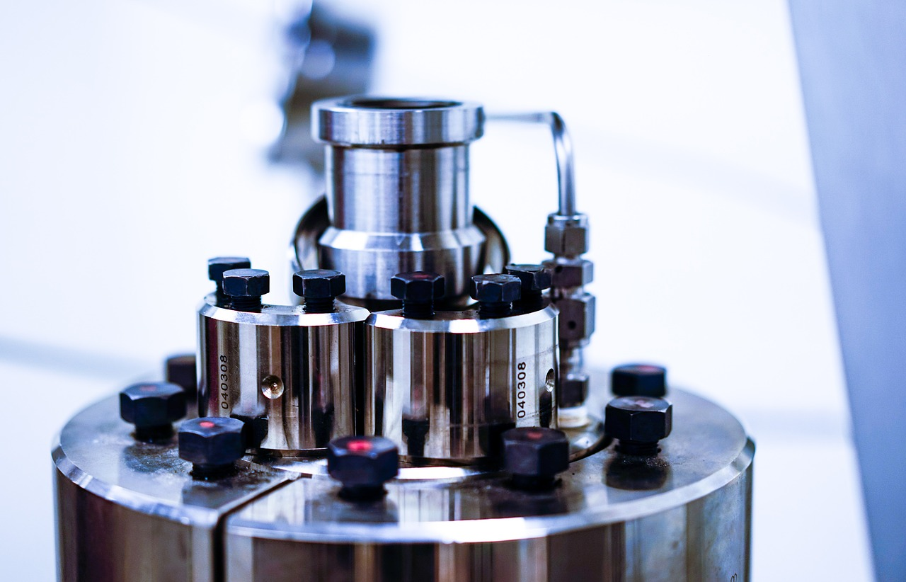

Welcome to WidgetCo
World's Best Widgets!
High quality widgets at discount prices!
No one knows widgets better than WidgetCo! As a young 16 years old immigrant from Bavaria, Germany, Ulrich Meyer was determined to carry on the family tradition of making high quality widgets. Since then, WidgetCo has grown to become one of the most premier manufacturers and wholesale distributors of all makes and models of widgets. We stand behind our promise to deliver the highest quality widgets at the most competitive prices. If you find a lower priced widget, let us know and we'll match the price! If you're not satisfied with your order, rest assured with our no-questions-asked, 30-day money back guarantee!

| Widget-1 | |
|---|---|
| Description | Testimonial |
| Widget-1 is made of 95% titanium and 5% medical grade alloys to increase long-term durability. It's approved by the US FDM for food production and is being used at the processing plants for some of the largest food producers around the world. Minimum order size is 10 units. Special pricing on units of 100 or more. | I'm the fixed operations manager of a major cereal company. WidgetCo has been our primary widget suppier for over 10 years. They have great prices, high quality, and friendly customer service. I highly recommend the Widget-1 for high-volume processing units as it lasts much longer than others. |

| Widget-2 Set | |
|---|---|
| Description | Testimonial |
| The Widget-2 Set is made of 100% bpa-free, medical grade plastic. The paint is compliant with RTD-5 specifications. We carry all metric and standard sizes as well as adapters for your older housings. We can take any size order. Most models are in stock now. We offer this as sets or parts of the set if needed. | I was searching all over the internet looking for the right size widget-2 and was starting to give up. Finally a friend of mine suggested I check out WidgetCo. I'm so glad I did! I spoke to Cindy over the phone. She asked me to send in a photo of the project, and she replied immediately with the correct size and price! |

| Widget-3 | |
|---|---|
| Description | Testimonial |
| Widget-3 is made of 95% titanium and 5% medical grade alloys to increase long-term durability. It's approved by the US FDM for food production and is being used at the processing plants for some of the largest food producers around the world. Minimum order size is 10 units. Special pricing on units of 100 or more. | I'm the fixed operations manager of a major cereal company. WidgetCo has been our primary widget suppier for over 10 years. They have great prices, high quality, and friendly customer service. I highly recommend the Widget-3 for high-volume processing units as it lasts much longer than others. |

| Widget-4 | |
|---|---|
| Description | Testimonial |
| The Widget-4 Set is made of 100% bpa-free, medical grade plastic. The paint is compliant with RTD-5 specifications. We carry all metric and standard sizes as well as adapters for your older housings. We can take any size order. Most models are in stock now. We offer this as sets or parts of the set if needed. | I was searching all over the internet looking for the right size widget-4 and was starting to give up. Finally a friend of mine suggested I check out WidgetCo. I'm so glad I did! I spoke to Cindy over the phone. She asked me to send in a photo of the project, and she replied immediately with the correct size and price! |

| Widget-5 | |
|---|---|
| Description | Testimonial |
| Widget-5 is made of 95% titanium and 5% medical grade alloys to increase long-term durability. It's approved by the US FDM for food production and is being used at the processing plants for some of the largest food producers around the world. Minimum order size is 10 units. Special pricing on units of 100 or more. | I'm the fixed operations manager of a major cereal company. WidgetCo has been our primary widget suppier for over 10 years. They have great prices, high quality, and friendly customer service. I highly recommend the Widget-5 for high-volume processing units as it lasts much longer than others. |
